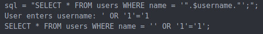
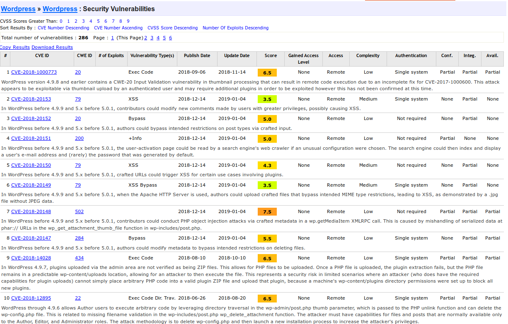
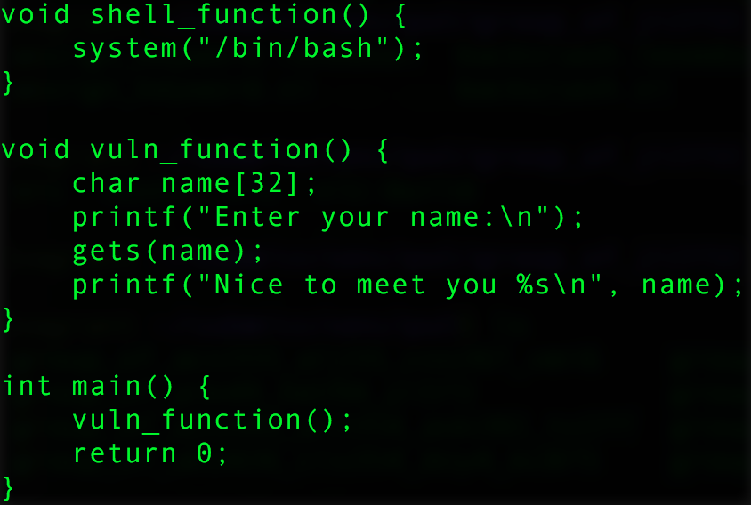

Cornell Hacking Club
CTF Bootcamp
Structure of a CTF
- Most points wins
- Ususally either Jeopardy or Attack/Defense
Jeopardy
- Many challenges in ~6 categories
- e.g. Web, Reversing, Pwnable, Crypto, OSINT, Misc
- Almost always a 1 point participation challenge
- Challenges are worth different amounts of points
- Some challenges use weights as a formula based on the number of solves
Attack/Defense
- We don't really do these
- You, and everyone else, gets a vulnerable VM
- You need to fix your vulnerabilies and exploit them in other team's servers
- Fun and thrilling, but require constant attention
- Like being friends with Arjun
Binary Reversing
What are they?
- Given a binary executable, break into it / exploit some vulnerability in order to find the flag
- Simple example: given an ELF file, break it and read the description to find a hard-coded password, which will then return the key
- Low level stuff
- As a result, a different pace from some of the other types of challenges
- Requires a more intimate knowledge of Assembly, processors, file types and systems, etc.
- Not too hard to get into as the information and techniques are readily available online
Some techniques and technologies
- Buffer Overflow attack:
- Exploiting memory leaks and allowing for overwriting of memory past allowed access: common in C programs that use certain commands or mis-use malloc().
- E.g. CS 3410 Project 4, exploits strcmp vulnerability.
- GDB:
- Built-in debugger for unix based systems. Allows a step-by-step decomposition of programs.
- See the register values, stack, and other useful information.
- IDA Pro (free and paid):
- Built-in debugger for unix based systems. Allows a step-by-step decomposition of programs.
- Interactive disassembly software, allows for viewing and parsing of binary executables and their related assembly code far easier than the inbuilt unix stuff like readelf.
Useful resources getting for getting started
- Binary reversing course:
- http://liveoverflow.com/binary_hacking/index.html
- Beginner CTF writeup for some BR challenges:
- https://veteransec.com/2018/10/19/hacktober-ctf-2018-binary-analysis-larry/
- More general overview of Binary Reversing:
- https://opensourceforu.com/2015/12/the-basics-of-binary-exploitation/
Web
Basic web vulnerabilities
- SQL Injection
- Sensitive data exposure
- Cross Site Scripting
- Components with know security vulnerabilities
SQL Injection
(XKCD #327)

Sensitive data exposure
- Generally letting attackers access things they shouldn't be able to
- Exposed API
- Password file in web directory
- Serving .git or similar in web directory
Cross Site Scripting
- If user input is unsanitized and posted to website you can inject scripting into it
Example:
My name<script>alert("You've been hacked!")</script>
Components with know security vulnerabilities
Reversing
Crypto
Novelty Crypto
- Steganography: Hiding secrets in plain sight.
Usually worth few points, often hidden inside of images or audio
- Classical Ciphers
Ceaser Ciphers, One-Time-Pads, etc. Usually suceptible to statistical attacks
Cracking Two-Time-Pads:
If we have c1 = m1 ⊕ k and c2 = m2 ⊕ k then
c1 ⊕ c2 = m1 ⊕ m2
Use crib-dragging to recover the individual messages
Modern Crypto
- Symmetric Crypto: Block Ciphers, Stream Ciphers, Hash functions
AES: Look at "mode of operation". ECB: easy, CBC: Look for bit flipping attacks, CTR: look for IV reuse, GCM: Look for nonce reuse/bias
- Asymmetric Crypto: RSA, ECDSA, Diffe Hellman
- RSA: padding oracles, shared factor, weak prime
- ECDSA/ECDHE: weak nonces, subgroup confinement
RSA shared-prime attack
Assume you have two public keys, n1 and n2. Factoring either key takes exponential time, but GCD is efficient
If n1 and n2 share a factor, we can do gcd(n1,n2) = p. Then n1 = p*(n1/p) and n2 = p*(n2/p)
Pwning
Daniel’s informal definition of pwning: take a vulnerable service and turn it into your personal terminal for the machine.
If you’ve taken 3410 you’ve already pwned a vulnerable binary: buffer overflow. The most common exploit is a buffer overflow attack, which lets you write data to memory that you shouldn’t be able to.
Simple example
The return address of vuln_function is stored on the stack and so is the buffer name.
Gets doesn’t check to make sure we aren’t writing outside of the buffer, so we can overwrite data
on the stack.
If we overwrite it to point to the shell_functions address instead of the main
function,
we now have remote code execution.
For every vulnerability, people have come up with ways to mitigate them. Stack canaries, Position Independent Execution, etc. This means we have to be more creative when figuring out how we exploit these vulnerabilities. Also many different kinds of exploits that we can chain together to pwn the system: PLT and GOT overwrites, ROP chains, etc.
MITRE CTF Details
- Friday 2pm - Saturday 2pm
- mitrestemctf.org
- Room TBD
- Poll: when do people want to meet?
- Practice: github.com/mitre-cyber-academy